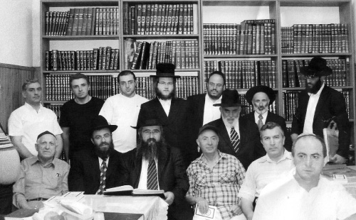

From Georgia to Yerushalayim
Rabbi Rachamim Refael Chikvashvili is the spiritual leader of Georgian communities in Eretz Yisroel as well as educational supervisor at the Chabad elementary school in Gilo. He is very successful in his work and connects many Jews to Torah and Chassidus.

Rabbi Rachamim Chikvashvili was born in Kutaisi in Georgia in 5726. His father, Chacham Sholom, was the student of Chacham Yaakov Dobrashvili who learned Torah from the mashpia Rabbi Shmuel Levitin.
“I remember many stories that I heard as a child from R’ Dobrashvili about the Rebbe Rashab and the Rebbe Rayatz and Chassidim of earlier generations, as well as Chassidic practices. Kutaisi had a large population of Jews and scholars, and the presence of Lubavitcher Chassidim was quite apparent. There were rabbanim there who had learned in Tomchei T’mimim and kept Chabad customs.
“About five years ago, I went to visit the Jewish communities in Georgia, together with the gabbai of our shul, Levi Bar Tikva. We went to Kutaisi and although I left when I was six years old, I remembered a lot. I remembered walking to shul at four in the morning to say T’hillim on Shabbos Mevarchim. Davening began at six.”
The Chikvashvili family was religious with strong traditions and simple faith.
“When we made aliya in 5732/1972, my father said he was sure he would be drafted into the police force because he thought that the job of the police in Eretz Yisroel was to enforce Halacha and shmiras Shabbos.
“At first we lived in Ashkelon, but my father yearned for Yerushalayim. Two years later, he sold everything he owned and bought an apartment in Sanhedria HaMurchevet. There were few Chassidim in this neighborhood and I attended a Chinuch Atzmai school.
“When I graduated elementary school, I went to Beis HaTalmud, a yeshiva that was near our home. I was familiar with Chabad, since there was no such thing as a Georgian who hadn’t heard of Chabad, but I did not know the significance of being a Chassid and learning in Chassidic schools.
“My inclination towards Chabad intensified as I grew older, specifically because of the strong opposition in the yeshiva to Chassidus. This was the beginning of the 80’s when anti-Chassidic sentiment was at a peak. I remember when rabbanim signed against the Lag B’Omer parade that Chabad organized in Tel Aviv. In my closet in the dormitory I had a picture of the Rebbe, and bachurim who heard about it asked me to take it down. I did not understand what all the opposition was about, since my father and grandfathers had spoken with great respect of Chassidus. So the opposition had the opposite effect; it aroused my curiosity. I realized that if there was opposition, there must be something to it.
“My parents always celebrated Yud-Tes Kislev. For decades, my father had arranged large gatherings on this day and celebrated with feasts. Back in Kutaisi, this day was celebrated as a holiday and many people came to our house for the occasion. This practice was continued in Eretz Yisroel. Every year, dozens of people attended from all over the country. I would bring friends from the yeshiva who enjoyed not only the good food but also the Chassidic niggunim that were sung.
“One day, I asked my father why he celebrated Yud-Tes Kislev and who was the Baal HaTanya. He explained what he knew and this aroused my curiosity even more. In yeshiva, there were about ten bachurim who came from Lubavitcher homes, including the Ehrentrau brothers, Wilhelm, etc.
“One day, I met one of the distinguished Chabad Chassidim in the neighborhood, R’ Avrohom Kot, and I asked him to learn Chassidus with us. He was happy to oblige and every Friday night we ten or so bachurim would meet to learn maamarim, sichos of the Rebbe and Tanya, of course. His home was opposite the yeshiva and we would go after the meal, secretly, so that none of the mashgichim would catch us. These shiurim opened my eyes. I understood that the chiddush is in ‘know the G-d of your father,’ as opposed to doing mitzvos by rote. My outlook changed from one extreme to another.
“When I went to beis midrash, we discovered that groups of talmidim from other Litvishe yeshivos were learning Chassidus. I found out about this when a group from Yeshivas Itri, led by the bachur R’ Yaakov Shmuelevitz (our beloved Beis Moshiach columnist, may he have a speedy recovery), transferred to Tomchei T’mimim in Kfar Chabad. This was shocking to many people, but it made me happy.
“There reached a certain point where in every Litvishe yeshiva there was a Chabad contact person, and when we organized farbrengens or trips to the yeshiva in Kfar Chabad, we would organize it together. I was the Chabad representative in Beis HaTalmud. The ones who farbrenged with us the most were R’ Zelig Feldman, R’ Binyomin Zilberstrom, and R’ Avrohom Boruch Pevsner. On Fridays I would go on Mivtza T’fillin with Lubavitcher bachurim to the Central Bus Station in Tel Aviv. There I was, a clean shaven Litvishe bachur with R’ Chaim of Volozhin’s Nefesh HaChayim, enabling people to do the mitzva of t’fillin.
“There were months when we went to the yeshiva in Kfar Chabad every free Shabbos. There, we enjoyed the farbrengens of R’ Berel Kesselman and R’ Mendel Futerfas. We hung on their every word. The truth was apparent in every word they uttered.
“When I was in Shiur Gimmel, the mashgichim were looking askance at me. They let me know that I could not continue in that way anymore. Learning Chassidus would no longer be tolerated. One of them told me, ‘When the ones involved are bachurim from Chassidic homes, that’s one thing, but when you schlep in bachurim who come from long-established Litvishe homes to Chabad … The hanhala cannot allow this to go on.’
“The rosh yeshiva, R’ Schwartzman (born in the Chassidic town of Nevel, d. November 2011), called me in for a talk. He himself kept some Chassidic practices such as wearing a gartel for davening, and in his home I saw Torah Ohr and other Chassidic s’farim. He said to me, ‘You are a fine bachur, but you cannot behave this way in a Litvishe yeshiva. Tomorrow, someone will want to learn the teachings of Rav Kook, and then what will we do? You know that it’s nothing personal; I myself learn Chassidus, but this cannot be done within the walls of the yeshiva.’
“At this point, I already had a beard and my hat had the typical Lubavitch pinch. They were upset because I had brought a certain Litvishe bachur to Chabad by the name of Refael Becher (today, he is a shliach in Beer Sheva) and some other bachurim from the yeshiva.
“After my talk with the rosh yeshiva, I kept a lower profile and the Chassidus classes that had taken place until then in the Chabad trailer for local Russian immigrants were moved to a more distant location, to the Chabad shul, so the mashgichim wouldn’t catch us. At a certain point, I realized that I belonged in Kfar Chabad. I was tested and accepted, but in the meantime I had become engaged to the daughter of R’ Bentzion Michlashvili of Kfar Chabad, so that idea was shelved. The Litvishe yeshiva agreed to retain me for another few months until I married.”
A LEADER IS BORN
The new couple settled in Sanhedria in Yerushalayim. Their first Tishrei together, 5745/1984, they flew to 770.
“Before the flight, I had a dream in which I saw myself handing out brochures in Georgian in many places. Then I passed by the Rebbe with the brochures and he said ‘yashar ko’ach’ to me. That was the first time I had a dream of the Rebbe.
“When I told my dream to my good friend R’ Yisroel Dror Cohen of Tzfas, who had given me the final push in my connecting to the Rebbe and Chassidus, he said to me, ‘When you dream about the Rebbe, it’s real. Dreams like these are not categorized as dreams that express vanity.’ He urged me to write about this dream and to send my letter to the Rebbe, and I did so. A few days later I received a response: ‘It was received and at an auspicious time it will be read at the gravesite [of the Rebbe Rayatz].’
“I learned in the kollel for rabbanim for Georgian immigrants, which was founded with the Rebbe’s bracha in Shikun Chabad in Lud. The founder and menahel is my father-in-law, R’ Bentzion Michlashvili.
“The mashgiach in the kollel is R’ Aharon Alashvili and the menahalim were distinguished Georgian rabbanim: Chacham Refael Alashvili, my father-in-law, Chacham Moshe Michlashvili and R’ Yitzchok Michlashvili. I went there nearly every day from Yerushalayim and often was hosted in Kfar Chabad by my father-in-law. There, I met a resident of Kfar Chabad by the name of R’ Yitzchok Krichli, a truly Chassidic Jew who treasured the Rebbe’s teachings. In our conversations, we spoke about how Georgian Jews did not have a newspaper or anything like it from a Chabad perspective although this existed for other k’hillos.
“We took the initiative. I brought the material and he translated it into Georgian, a language I did not fully understand. We called our newsletter Torah Ohr. It was made available in all the Georgian k’hillos in Eretz Yisroel and is published till today. A short time later, my brother-in-law Avrohom Michlashvili, who works with Georgian Jews, returned to Eretz Yisroel, and ever since then, the circulation moved into high gear. It has Chassidic stories and a sicha from the Rebbe as well as Inyanei Geula and Moshiach. When I went to the Rebbe in 5751, after publishing the fiftieth edition, my brother-in-law and I submitted some brochures that we published. The Rebbe blessed us with ‘bracha v’hatzlacha.’ I felt that my dream had come true.”
R’ Chikvashvili took on educational positions in the Chabad elementary school in Gilo, and then he worked in chinuch in the Chabad elementary school in Netanya while serving as a rav. When he returned to Yerushalayim, he was appointed supervisor of the elementary school in Gilo (see box).
In addition to his educational work, R’ Chikvashvili serves as rav to Georgian Jews in Yerushalayim.
“After I married, I learned in the kollel in Lud for five years and was tested by R’ Mordechai Eliyahu and received smicha for rabbanus. Even back then, I began giving shiurim in the Georgian shul located in the Machane Yehuda shuk. The shul is named for Chacham Moshe Dobrashvili. It belonged to Yad L’Achim, and Chacham Moshe would give shiurim there; he was an active member in the organization. When he passed away in 5739, the shul was named ‘Dibras Moshe’ for him. Later on, I began giving shiurim in the Kol Yaakov shul in Romema and was appointed the spiritual leader there. I inherited the sense of rabbinic mission and devotion to passing the tradition from my father, Chacham Sholom.
“I remember that in the 70’s, he would travel to the Georgian community in Beer Sheva every Shabbos because they did not have a rav. His teachers got him involved and he did not ask too many questions. ‘There are Jews who daven without a chazan and baal koreh? I’m going,’ he said. In Tishrei he went to Netanya several times in order to serve as chazan in the big Georgian community there and he took me along to blow the shofar. In 5757 they offered me the position of rav of their k’hilla.
“After receiving the Rebbe’s bracha through the Igros Kodesh, I left Yerushalayim for Netanya. I also worked in Chabad schools in Netanya, in the elementary school and giving shiurim in the yeshiva. My wife ran the preschool. We lived in Netanya for four years, during which time I received permission from the Ashkenazi rabbi to conduct weddings. I also did shimush at R’ Wosner’s beis din in B’nei Brak in all aspects of rabbanus, and I learned safrus and sh’chita in order to be able to respond to questions I would be asked.”
***
After four years of family and mekuravim in Yerushalayim begging him to return, he decided to go back to Yerushalayim. He returned to the Georgian community in the Romema neighborhood. A short while later, he was offered a slot on a radio program for immigrants during which he would talk about Judaism in the Georgian language. It is broadcast every Erev Shabbos and he speaks about Geula and the parsha and tells stories about the Rebbe and Chabad leaders.
In the shul, he started a night kollel which is subsidized by members of Chacham Yaakov Dobrashvili’s family for whom the shul is named. There are also shiurim and minyanim as well as farbrengens every Shabbos and on special days.
***
Rafi Refaeli, one of the bachurim in the Netanya k’hilla, asked him to teach him how to blow the shofar so he would be able to do so for his fellow soldiers at the military base where he served. R’ Chikvashvili bought him a shofar and taught him how to use it.
The bachur practiced the different sounds and learned the halachos. Since then, every Elul, he blows the shofar all over the base every day.
“He is a mekurav to the shliach R’ Segal in Rishon L’Tziyon. He is on staff at the University of Netanya and has a tremendous influence on his friends. That is the special quality of a Lubavitcher rav: that he can be found everywhere and in every circumstance in order to be mekarev more Jews.”
***
When R’ Chikvashvili returned from Netanya, he decided not to neglect the other Georgian shuls in Yerushalayim. Although he lives in Romema, he is involved with all the Georgian k’hillos throughout Yerushalayim in Pisgat Zeev, Neve Yaakov, Katamon, and Kiryat Yovel. He is the one to whom people turn for both happy and sad occasions and for halachic questions. Many people also go to his house in order to write to the Rebbe.
As a rav, what challenges do you face?
“There are many challenges. First, I need to adjust to every situation and every age. There were times that I gave shiurim in the kollel in Lud in Hilchos Tahara or Hilchos Shabbos, I taught in the yeshiva in Beitar Ilit run by R’ Daniel Goldberg a”h, I worked in the elementary school in Gilo with young children, and worked with Georgian immigrants. Every few hours I had to ‘change hats.’
“As a shliach, especially in rabbanus, a person can’t cast himself in a particular ‘image.’ It might work for other groups, but if I can be mekarev someone, I will be there and it will make no difference how he looks or how old he is. When shlichus is a person’s focus then he will reach out kindly to everyone and they will reflect the love back to him. Today, rabbanus is not just about paskening Halacha, but being a father and mother to every member of the community, knowing how to listen and help, and especially, loving everyone.”
What is unique about working with the Georgian community?
“Family is extremely important. Most other communities don’t make as big a deal about a yahrtzait as the Georgian community does. The rav is invited and asked to say Divrei Torah. When you are a Lubavitcher rav, you say Chassidus even if you don’t call it by that name.
“Another thing which is typical of the Georgian community is their strong relationships with their own rabbanim. Even all these decades after making aliya, they will only feel connected to someone who is one of them, who is familiar with the nuances and knows the language. The most outstanding trait is emunas chachomim which is transmitted from generation to generation.
“When I give a shiur, I start or end with three Chassidic stories and Chassidic customs. Every week, I make sure to have a supply of stories because Georgians feel tremendous warmth for Torah and mitzvos. I have seen the power of a story, which can accomplish what intellectual gymnastics cannot accomplish.”
QUIETING DOWN THE STORM
It did not seem necessary to ask R’ Chikvashvili about Geula and Moshiach since anyone who follows him for just a few hours will see how involved he is in the subject. However, I asked him anyway and he said:
“Activities having to do with Moshiach, aside from their intrinsic importance, have a great effect on other activities. I meet people who learned with me in yeshiva, Litvishe fellows, and they tell me how amazing it is that whatever the Rebbe said in the past is happening before our eyes. In our shul we proclaim ‘Yechi.’ Sometimes, people ask about it but there is no reason to be nervous. A Chassid needs to learn about it and answer clearly.
“Writing to the Rebbe through the Igros Kodesh is very popular in the k’hilla. Every week, people ask me about writing and women ask my wife.
“A few years ago, we flew with one of our children to 770 to celebrate his bar mitzva. First, we wrote to the Rebbe and the answer we opened to said: during the trip, learn the three shiurim established by the Rebbe Rayatz – Chumash, T’hillim, Tanya – publicly.
“The truth is, we did not take this literally, but before we landed in New York we encountered a major storm. I had flown many times in my life and had seen nothing like this before. We immediately remembered what the Rebbe had said in the letter. We opened the daily Tanya and I asked my son to repeat it. He read it and interestingly, the Alter Rebbe was talking about the splitting of the sea. When my son sat down, the storm died down. When we landed, a few ladies who had been sitting near us asked my wife what we had read that had quieted the storm! The power of an answer from the Rebbe.”
EDUCATIONAL PRINCIPLES
We asked R’ Chikvashvili a number of questions on the topic of chinuch:
What is your “Ani Maamin” (bedrock belief principle) of Chinuch?
My “Ani Maamin” is that the teacher must live the concept of chinuch, live Yiras Shamayim, live the Rebbe, live Chassidus, and in this way be a ner l’ha’ir. It all starts with the teacher. A teacher doesn’t go to sleep without finishing the daily Rambam or his regular shiurim. Even if the students don’t see this, they sense it. This is the key to chinuch: being a role model. A teacher can talk and talk and nothing will be absorbed if he himself is not fully immersed in it.
You put all of chinuch on the teachers?
Yes. There are people who say, “Look, these talmidim had that G-d fearing Jew as a teacher and look where they are today.” So the truth is, there are other partners such as the parents and the environment, but in addition to that, what the teacher instills in the students remains forever, even if at this point one doesn’t see the Yiras Shamayim. In the future, it will come forth. I have met talmidim who went off the derech and came back because they had where to return to. The sweet experience of Torah and mitzvos did not let them rest; it was before their eyes.
In your experience, how can we be mechanech (educate) towards p’nimius (internalizing Chassidic values)?
Chassidus has power. It is p’nimius ha’kesser (the innermost aspect of the Divine “Crown”); and when we are mechanech with Chassidus, that is chinuch for p’nimius. We may not pay attention to this, but those who go out of the Chabad circle will see how even Lubavitch ziburis (Talmudic term for lowest grade quality) has p’nimius. When you walk in the street, you can tell who Lubavitch is. Why? Because it shows. If a child sees that his teacher lives the Rebbe and translates this into deeds and not just talk, he will get an excellent chinuch for p’nimius.
Nevertheless, there are conflicts. How do we overcome them?
The conflicts, if there are any, are not with the talmidim but with the parents, when they say something different than the school. So the hanhala and the parents need to be in sync; there need to be principles and goals, no ego. There needs to be clarity and the school has to speak loudly and clearly.
At the same time, in order to avoid conflicts, there has to be coordination of expectations. The teacher has to be in touch with the parents; ditto for the menahel and the supervisor. In truth, everybody wants what is good for the child. If the parent realizes there is no power play, but only principles which are carried out with smiles and love and the children are happy, then he will accept that which goes counter to his world view and in the end, adopt those principles for himself.
And the recipe for success?
When a parent checks out a school, the first thing to check is not the academic level, although this is important. He needs to see whether the kids are happy and if the teachers are happy and smiling, as in the well-known instruction the Rebbe gave to R’ Chadakov.
WOMEN’S ACTIVITIES
There are many programs and activities for women in the Georgian community. One of the veteran lecturers is Mrs. Chana Shmueli. For nineteen years (three in Yerushalayim) she has been giving classes all over the country to Georgian women.
“In Yerushalayim, the population is different and the distances make it hard for women from other neighborhoods to attend regularly as they do in small towns,” says Mrs. Shmueli. “I recently sensed that although women demonstrated a great interest, they were not getting more involved in Jewish practice, and for four months I stopped giving shiurim. Then I got many phone calls from women who said that even if they did not become baalos t’shuva, the shiur was very important to them. One of the women said she had been on the brink of death and thanks to the shiurim, she had recovered. So I understood that one ought not to assess the effectiveness of shiurim by how many women begin wearing a wig or by how many women start doing mitzvos, and I started giving shiurim again.”
Although Mrs. Shmueli does not externally identify with Chabad, she feels very strongly about the Rebbe and Chassidus.
“There was a time when my parents lived opposite 770, and we grew up with love for Chabad. I wrote letters to the Rebbe from when I was 12. In my first letter, written in Russian, I wrote that we were religious and there were people who made fun of our piety, saying we were primitive. What should I do? I also asked the Rebbe whether I would get married and what kind of home I would have. I wanted to know, even at that young age.
“The Rebbe, by way of response, sent me two coins of ten agurot each and a letter full of brachos. This letter gave me a lot of strength and encouragement.
“The night after I received the letter, I had a dream, a vision actually, in which I saw my future husband. It was very strange. I thought that dreams were meaningless and forgot about it.
“My father, who was a driver for a distinguished rosh yeshiva, met a Georgian boy in yeshiva and began inviting him to Shabbos meals. The moment I saw him, my heart skipped a beat. I remembered my dream and recognized the bachur, but I kept all this to myself. When my father asked me, half a year later, whether I was interested in a shidduch, I knew whom he had in mind and I agreed. Half a year later, when I was 17, we married. Only then did I tell him about the letter and the dream.”
When Mrs. Shmueli’s parents moved to Crown Heights because of the father’s work in imports, Chana and her husband and her oldest son who was nine months old visited them.
“My baby did not move. Like all parents, we were anxious to see him grow and turn over and crawl, but he did nothing. The doctors who examined him said he suffered from childhood paralysis and naturally, we were very upset.
“After my father saw the baby and heard the doctors’ diagnosis, he took us for ‘dollars’ so we could ask the Rebbe for a bracha. When it was my turn, I spoke to the Rebbe in Russian and asked for a bracha. ‘The child in my arms doesn’t stand and doesn’t crawl. The doctors say it is childhood paralysis.’
“The Rebbe gave one dollar for me and one for him and said, ‘Bracha V’hatzlacha,’ and I moved on. Then I was called back and the Rebbe asked me in Russian whether the baby had a letter in a Torah. I said he did not. The Rebbe said we should buy him a letter, which we did that same day.
“After visiting 770 we returned to Eretz Yisroel and the first thing I did was give the baby a bath. Then I dressed him in pajamas and – he stood up and turned around on his feet. I shrieked so loudly the neighbors heard me. Today, my son is a young man living in Ashdod who is learning well and has three delightful children.”
MOMENTS WITH THE REBBE
R’ Chikvashvili has spent over twenty Tishreis with the Rebbe, but Tishrei 5749 stands out and will never be forgotten.
“We went with our oldest child Yisroel Shimshon, today a mashpia in Kiryat Shmuel who works with Georgian Jews in the north. He was two and a half at the time. At Kos Shel Bracha on Motzaei Simchas Torah, at two in the morning, I passed by the Rebbe with my son. The Rebbe poured some wine for me and for my son and then stopped pouring and followed us with his gaze until we went off the bima.
“On another occasion that year, at ‘dollars,’ my son asked the Rebbe to come back to Eretz Yisroel with us. The Rebbe smiled broadly and said, ‘Have a good trip’ two times. At the end of the women’s Kinus that was held that month, my wife took our son and when they passed by for dollars at the end of the sicha, our son said, ‘Moshiach now’ to the Rebbe. The Rebbe made a powerful encouraging motion and smiled broadly and answered ‘Amen’ loudly.”
Nosson Avrohom. "From Georgia to Yerushalayim." Beis Moshiach, no. 844 (August 2, 2012).